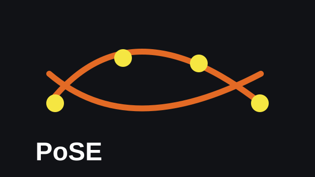
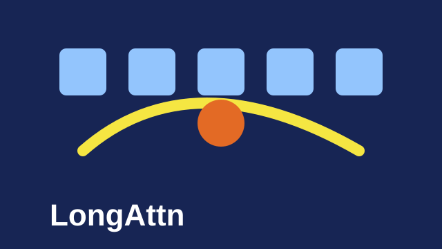

HOVER IMAGES TO SHOW ABSTRACTS
Representative Research Works
DocLens: A Tool-Augmented Multi-Agent Framework for Long Visual Document Understanding
arXiv, 2025
Multi-agent visual document understanding with evidence localization and answer adjudication.
SELECTED AND RECENT
Publications
Long Context & Retrieval
DocLens: A Tool-Augmented Multi-Agent Framework for Long Visual Document Understanding
arXiv, 2025


Agents, Evaluation & Multimodal

MiMo: Unlocking the Reasoning Potential of Language Model -- From Pretraining to Posttraining
arXiv, 2025
* denotes equal contribution. For a full list, please see Google Scholar.
EDUCATION & EXPERIENCE
Education & Work Experience
Peking University
Beijing, China
Ph.D. Student, School of Computer Science
Sept 2022 - Present
Advisor: Prof. Sujian Li.
B.Sc. in Computer Science and Technology, School of EECS
Sept 2018 - Jun 2022
Microsoft Research Asia
Beijing, China
Research Internship
Jun 2023 - Mar 2024
Mentored by Liang Wang and Nan Yang. Research on long-context retrieval and efficient context window extension.
AWARDS & COMMUNITY
Awards & Community Contributions
- Award of Academic Excellence, Peking University, 2024.
- Jiukun Scholarship, School of Computer Science, Peking University, 2024.
- Stars of Tomorrow, Microsoft Research Asia, 2024.
- Excellent Graduate of Peking University, 2022.
- Reviewer for ICLR, NeurIPS, EMNLP, ACL, COLING, ICASSP, and related venues.